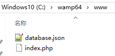
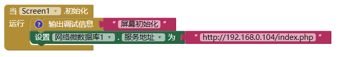

自建网络微数据库后台
系统自带网络微数据库使用国外的服务器，速度太慢？数据存在别人服务器上，不安全？下面介绍自己搭建简单的网络微数据库后端。不用复杂的mySQL知识。
准备工作
首先你要有自己的服务器，可以把相关文件上传，服务器要支持php。
下载文件myTinyWebDB.zip，解压，上传到你的服务器。
我是在本机测试（win10+wamp64），文件结构如下：

index.php文件内容如下：
<?php
header("Content-Type: application/json");
$file = "database.json";
if ($_SERVER['REQUEST_METHOD'] != "POST" || !isset($_REQUEST['tag'])) {
die("Bad Request");
}
if (isset($_REQUEST['value'])){
$tag = trim($_REQUEST['tag']);
$value = trim($_REQUEST['value']);
$f = fopen($file, 'r');
$data = fgets($f);
fclose($f);
$parsedData = json_decode($data, true);
$parsedData[$tag] = $value;
$f = fopen($file, 'w') or die("Can't open file");
fwrite($f, json_encode($parsedData));
fclose($f);
$result = array("STORED", $tag, $value);
echo json_encode($result);
}else{
$tag = trim($_REQUEST['tag']);
$f = fopen($file, 'r');
$data = json_decode(fgets($f), true);
fclose($f);
if(isset($data[$tag])){
$result = array("VALUE", $tag, $data[$tag]);
}else{
$result = array("VALUE", $tag, "");
}
echo json_encode($result);
}
?>
database.json文件内容如下(只有一对括号)：
{}
这里需要注意： 必须给予database.json文件写权限，否则无法保存数据。 感谢@XM提醒。
好了，运行你的服务器，在浏览器中输入http://你的网址/index.php,回车，如果返回“Bad Request”，说明设置成功。
逻辑设计
![2023-05-10T04:54:29.png][3]
这里192.168.0.104是我本机的ip，你要换成你自己的服务器地址。
ok，网络微数据库就可以跟以前一样使用了。